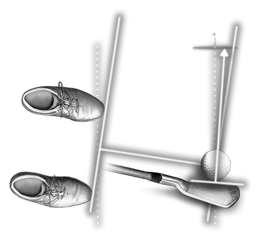
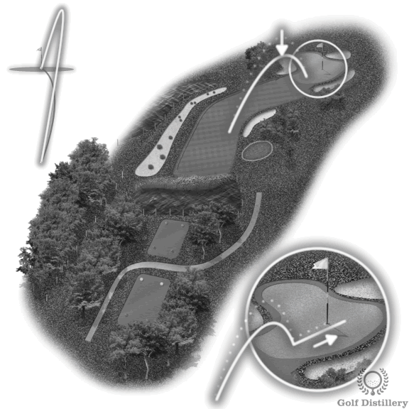
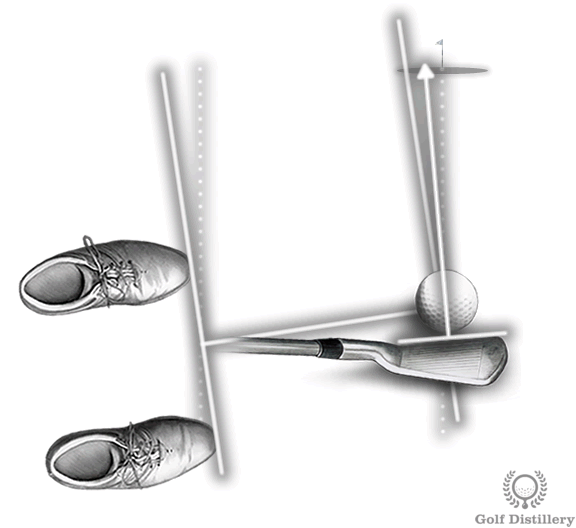

高尔夫术语表¶
本文档包含 Movement Chain AI 产品相关的高尔夫术语定义
术语索引¶
| # | 术语 | 英文 | 简要说明 |
|---|---|---|---|
| 1 | 差点 | Handicap | 球员水平指标，数字越小越好 |
| 2 | 节奏比 | Tempo Ratio | 上杆/下杆时间比值，职业标准 3:1 |
| 3 | 引导侧与后侧 | Lead Side & Trail Side | 避免左右混淆的通用命名 |
| 4 | 杆头速度 | Clubhead Speed | 击球瞬间球杆速度，决定距离的关键 |
| 5 | X-Factor Stretch | X-Factor Stretch | 转换期额外蓄力，爆发力的关键 |
| 6 | 峰值速度 | Peak Velocity | 各身体部位的最大角速度 |
| 7 | 峰值间隔 | Time Between Peaks | 相邻部位达峰的时间差，运动链效率的关键 |
| 8 | 杆面 | Clubface | 球杆击球的平面，决定球的起飞方向 |
| 9 | 挥杆路径 | Swing Path | 杆头在触球瞬间的移动方向 |
| 10 | 球路 | Ball Flight | 球的弯曲方向，由杆面和路径的差值决定 |
1. 差点 (Handicap)¶
一句话定义： 差点就是你比标准杆多打的杆数，数字越小水平越高。
基本概念¶
| 术语 | 含义 |
|---|---|
| 标准杆 (Par) | 球场设计的"理想"杆数，通常 18 洞 = 72 杆 |
| 差点 (Handicap) | 你的平均成绩与标准杆的差距 |
每洞标准杆：
- Par 3 — 短洞（1 杆上果岭 + 2 推杆）
- Par 4 — 中洞（2 杆上果岭 + 2 推杆）
- Par 5 — 长洞（3 杆上果岭 + 2 推杆）
典型 18 洞组合：4 个 Par 3 + 10 个 Par 4 + 4 个 Par 5 = 72 杆
水平对照¶
| 差点范围 | 水平 | 描述 | 18洞预期成绩 |
|---|---|---|---|
| 0-5 | 高阶 | 接近职业水平，稳定低差点 | 72-77 杆 |
| 5-10 | 中高阶 | 认真爱好者，成绩稳定 | 77-82 杆 |
| 10-18 | 中阶 | 能下场，有固定挥杆，但不稳定 | 82-90 杆 |
| 18-25 | 中低阶 | 能打到球，但失误多 | 90-97 杆 |
| 25-36 | 初学者 | 刚开始学习 | 97-108 杆 |
| 36+ | 新手 | 完全初学 | 108+ 杆 |
目标用户： 差点 10-25 的中阶/中低阶球员是我们的核心用户群
计算方式¶
简化版：
例：平均打 90 杆 → (90-72) × 0.96 ≈ 差点 17
官方计算（USGA/WHS 世界差点系统）：
- 取最近 20 轮成绩中最好的 8 轮
- 每轮计算差点差异：
- Course Rating：该球场对标准杆球员的难度评分
- Slope Rating：球场对业余球员的相对难度（113 为标准值）
- 取 8 轮平均值 × 0.96 = Handicap Index
举例：
- 球场 Course Rating 72.0，Slope Rating 125
- 你打了 90 杆
- 差点差异 = (90 - 72) × (113 ÷ 125) = 16.3
作用¶
让不同水平的球员可以公平竞技——比赛时低差点球员让高差点球员若干杆。
2. 节奏比 (Tempo Ratio)¶
一句话定义： 节奏比是上杆时间与下杆时间的比值，职业球手通常为 3:1。
计算公式¶
标准数值¶
| 水平 | 节奏比 | 上杆时间 | 下杆时间 |
|---|---|---|---|
| 职业球手 | 3:1 | ~0.75s | ~0.25s |
| 业余球手 | 2:1 ~ 2.5:1 | 变化大 | 变化大 |
为什么重要¶
- 一致性：节奏稳定的球手，击球更稳定
- 力量传递：正确的节奏让运动链顺畅发力
- 压力下表现：节奏是抗压的锚点，紧张时容易乱
关键认知¶
节奏比是诊断工具，不是训练目标
- 3:1 是参考值，不是绝对标准
- 每个人有自己的自然节奏（快如 Nick Price，慢如 Ernie Els）
- 关键是保持一致，而不是追求某个数字
常见问题¶
| 问题 | 表现 | 后果 |
|---|---|---|
| 节奏比过低 (如 2:1) | 上杆太快 | 没有充分蓄力，力量不足 |
| 节奏比过高 (如 4:1) | 下杆太慢 | 挥杆不够果断，失去爆发力 |
训练方法¶
- Tour Tempo 方法：使用节拍器，常用节拍 21/7（上杆21拍，下杆7拍）
- 关注过渡区：上杆顶点到下杆启动的转换，最容易打乱节奏
详细生物力学分析见：生物力学入门 - 节奏比
3. 引导侧与后侧 (Lead Side & Trail Side)¶
一句话定义： 高尔夫中用"引导侧"和"后侧"代替"左右"，避免左右手球员的混淆。
基本定义¶
| 术语 | 右手球员 | 左手球员 | 作用 |
|---|---|---|---|
| 引导侧 (Lead Side) | 左侧 | 右侧 | 面向目标，承受击球冲击 |
| 后侧 (Trail Side) | 右侧 | 左侧 | 背向目标，提供旋转动力 |
为什么不用"左右"¶
- 通用性：同一套术语适用于左右手球员
- 功能描述：名称本身说明了该侧在挥杆中的角色
- 国际标准：全球高尔夫教学的通用语言
各阶段的角色¶
| 挥杆阶段 | 引导侧作用 | 后侧作用 |
|---|---|---|
| 上杆 | 保持稳定，抵抗侧移 | 主导旋转，蓄积能量 |
| 转换期 | 启动下杆，引导重心转移 | 保持蓄力，准备释放 |
| 下杆 | 拉动身体，承受冲击 | 推动旋转，释放能量 |
| 收杆 | 支撑身体，保持平衡 | 完成旋转，自然跟随 |
常见问题¶
| 问题 | 表现 | 后果 |
|---|---|---|
| 引导侧塌陷 | 引导侧髋部/膝盖向目标侧移 | 击球不实，力量损失 |
| 后侧过早释放 | 后侧手臂/手腕提前释放 | 早释放，失去距离 |
| 引导侧阻断 | 引导侧髋部旋转受阻 | 挥杆被卡住，方向失控 |
对传感器项目的意义¶
Movement Chain AI 的应用
- IMU 命名规范：传感器位置使用 lead/trail 而非 left/right
- 算法复用：动作分析只需一套逻辑，通过配置切换左右手模式
- 数据通用性：标注和指标报告对两种球员通用，无需维护两套术语
详细生物力学分析见：生物力学入门 - 引导侧与后侧
4. 杆头速度 (Clubhead Speed)¶
一句话定义： 杆头速度是击球瞬间球杆头部的移动速度，是决定击球距离的最关键因素。
计算公式¶
- Smash Factor（击球效率）：典型值 1.45-1.50（一号木）
- 例：杆头速度 100 mph × 1.48 = 球速 148 mph
不同水平参考值¶
| 水平 | 杆头速度 (一号木) | 预期开球距离 |
|---|---|---|
| PGA 巡回赛 | 113-125 mph | 280-320 码 |
| 低差点 (0-5) | 100-110 mph | 250-280 码 |
| 中差点 (10-18) | 85-95 mph | 200-240 码 |
| 高差点 (25+) | 70-85 mph | 160-200 码 |
| LPGA 巡回赛 | 94-100 mph | 240-270 码 |
影响因素¶
杆头速度由以下公式决定：
1. 角速度 ω（主要因素）¶
角速度受两个机制影响：
机制 A：角动量传递效率¶
| 因素 | 如何影响 ω | 物理原理 |
|---|---|---|
| 运动链时序 | I 依次减小 → ω 增大 | 骨盆→躯干→手臂→杆头，每传递一次 I 减小 |
| 近端减速 | 加速角动量传递 | 躯干刹车 → 手臂加速 |
| 肌肉放松 | 减少传递损耗 | 紧张会"锁住"关节，阻碍传递 |
机制 B：能量输入¶
| 因素 | 如何影响 E | 物理原理 |
|---|---|---|
| X-Factor | 储存弹性势能 | \(E = \frac{1}{2}k\theta^2\)，躯干扭紧 |
| X-Factor Stretch | 额外 +20% 能量 | 转换期再蓄力 + SSC 效应 |
| 肌肉做功 | 持续输入能量 | 下杆过程中肌肉发力 |
| 地面反作用力 | 启动能量来源 | 脚蹬地产生初始力矩 |
2. 旋转半径 r（次要因素）¶
| 因素 | 如何影响 r | 注意 |
|---|---|---|
| 手臂伸展 | r 增大 → v 增大 | 但过度伸展会增加 I，降低 ω |
| 球杆长度 | 固定值 | 一号木 r 最大 |
| 身高/臂长 | 个体差异 | 高个子有天然优势 |
综合公式¶
各因素影响程度¶
| 因素 | 影响对象 | 重要程度 | 可训练性 |
|---|---|---|---|
| 运动链时序 | I 减小效率 | ⭐⭐⭐⭐⭐ | 高 |
| X-Factor Stretch | E 储存量 | ⭐⭐⭐⭐⭐ | 高 |
| 地面反作用力 | L 产生量 | ⭐⭐⭐⭐ | 中 |
| X-Factor | E 储存量 | ⭐⭐⭐ | 中 |
| 核心力量 | E 输入量 | ⭐⭐⭐ | 高 |
| 手臂半径 r | 杆头速度 | ⭐⭐ | 低 |
为什么职业球手更快？¶
职业球手 业余球手
─────────────────────────────────────────────
地面反作用力：充分利用 利用不足
↓ 产生更多 L ↓ L 较少
X-Factor Stretch：15-25% 5-10%
↓ 储存更多 E ↓ E 较少
运动链时序：精准 混乱
↓ I 高效减小 ↓ 传递损耗
肌肉：适时发力+放松 全程紧张
↓ 能量顺畅传递 ↓ 能量被"锁住"
─────────────────────────────────────────────
结果：120+ mph 85-95 mph
核心结论：杆头速度 = 角动量传递效率 × 能量输入 × 旋转半径。三者中，传递效率最关键，也最可训练。
详细物理概念见：物理学术语表
与 Movement Chain AI 的关系¶
我们的系统如何帮助提升杆头速度
我们不直接测量杆头速度（需要雷达如 TrackMan），但通过分析：
- 运动链时序 — 是否按正确顺序发力
- 节奏比 — 是否有足够的蓄力和爆发
- X-Factor — 躯干拧紧程度
这些指标帮助球手优化挥杆效率，间接提升杆头速度。
详细生物力学分析见：生物力学入门 - 杆头速度
5. X-Factor Stretch¶
一句话定义： X-Factor Stretch 是转换期（下杆启动瞬间）X-Factor 的额外增量，是爆发力的关键来源。
与 X-Factor 的区别¶
| 概念 | 定义 | 类型 |
|---|---|---|
| X-Factor | 肩膀角度 − 骨盆角度 | 瞬时值（某一时刻的角度差） |
| X-Factor Stretch | 转换期 X-Factor − 顶点 X-Factor | 变化量（两个时刻的差值） |
计算示例¶
时刻 肩膀 骨盆 X-Factor
─────────────────────────────────────────────
上杆顶点 (Top) 90° 45° 45° ← X-Factor at Top
转换期峰值 92° 37° 55° ← X-Factor 峰值
X-Factor Stretch = 55° − 45° = 10°（或 +22%）
为什么会产生 Stretch？¶
转换期发生了一个反直觉的动作：
- 髋部已经开始向目标转动（主动启动下杆）
- 肩膀还在继续向后（惯性滞后）
- 躯干被进一步拧紧，储存额外弹性势能
物理原理¶
把躯干想象成一根扭转弹簧：
- k = 躯干扭转刚度（核心力量）
- θ = 扭转角度（X-Factor）
关键：能量与角度的平方成正比。角度增加 10%，能量增加约 23%。
这就是为什么 Stretch 虽然只有几度，但对爆发力贡献很大——它发生在能量即将释放的临界点。
基准值¶
| 水平 | X-Factor Stretch | 解读 |
|---|---|---|
| 初学者 | < 5% | 没有"蓄力"动作 |
| 业余球手 | 5-10% | 有一定分离 |
| 低差点 | 10-15% | 较好的转换时机 |
| 职业球手 | 15-25% | 明显的肩髋分离增量 |
为什么 Stretch 比 X-Factor 更重要？¶
研究发现：
| 指标 | 与杆头速度相关性 |
|---|---|
| X-Factor (顶点) | r = 0.60（中等） |
| X-Factor Stretch | r = 0.85（强） |
"X-Factor Stretch 在高水平球手中显著大于低水平球手，而 X-Factor 本身没有显著差异"
拉伸-缩短循环 (SSC)¶
X-Factor Stretch 利用了运动生物力学中的核心原理：
这个机制存在于几乎所有爆发力运动中：
| 运动 | 预拉伸阶段 | 类似"Stretch"的动作 |
|---|---|---|
| 跳高 | 下蹲 | 起跳前膝盖再弯一点 |
| 投掷 | 手臂后引 | 躯干先转，手臂滞后 |
| 拳击 | 收拳蓄力 | 髋部先转，拳头滞后 |
| 网球发球 | 背弓 | 腿蹬地时背部进一步拉伸 |
与 Movement Chain AI 的关系¶
我们如何检测 X-Factor Stretch
- 视觉分析：测量肩髋角度变化
- IMU 传感器：捕捉精确的转换时机（毫秒级）
- 结合两者：计算 Stretch 值和时序质量
这是区分业余与职业挥杆的核心指标之一。
详细生物力学分析见：生物力学入门 - X-Factor Stretch
6. 峰值速度 (Peak Velocity)¶
一句话定义： 峰值速度是某个身体部位在挥杆过程中达到的最大角速度。
基本概念¶
每个身体部位在挥杆中都有一个速度曲线，峰值是曲线的最高点：
各部位峰值速度基准¶
| 身体部位 | 职业球手 | 业余球手 | 差距 |
|---|---|---|---|
| 骨盆 Pelvis | 477°/s | 395°/s | -17% |
| 躯干 Thorax | 552°/s | 450°/s | -18% |
| 手臂 Arms | 1200°/s | 900°/s | -25% |
| 球杆 Club | 2500°/s | 1800°/s | -28% |
峰值速度递增原理¶
从骨盆到球杆，峰值速度逐级递增：
这是因为：
- 角动量守恒：\(L = I \times \omega\)，当 I 减小时 ω 增大
- 转动惯量递减：骨盆 > 躯干 > 手臂 > 球杆
- 能量传递：每传递一次，速度被"放大"
达峰时机¶
以转换期开始为 0ms：
| 身体部位 | 达峰时间 | 峰值速度 |
|---|---|---|
| 骨盆 | 50-70ms | 477°/s |
| 躯干 | 70-90ms | 552°/s |
| 手臂 | 100-120ms | 1200°/s |
| 球杆 | 130-150ms | 2500°/s |
与 Movement Chain AI 的关系¶
我们如何测量峰值速度
- IMU 传感器：直接测量各部位角速度
- 视觉分析：通过姿态变化计算角速度
- 融合算法：结合两者提高精度
峰值速度是评估运动链效率的核心指标。
7. 峰值间隔 (Time Between Peaks)¶
一句话定义： 峰值间隔 (TBP) 是相邻两个身体部位达到峰值速度之间的时间差。
基本概念¶
时间轴示意：
骨盆峰值 躯干峰值 手臂峰值 球杆峰值
↓ ↓ ↓ ↓
────●───────────────●───────────────●───────────────●──→ 时间
|←───TBP₁───→|←───TBP₂───→|←───TBP₃───→|
~40ms ~40ms ~20ms
最佳范围¶
| TBP 范围 | 状态 | 后果 |
|---|---|---|
| <10ms | 间隔太小 | 几乎同时达峰，能量传递不充分 |
| 20-50ms | 最佳范围 | 充分传递，速度叠加 |
| >60ms | 间隔太大 | 能量在等待中泄漏 |
物理意义¶
TBP 反映了角动量传递的时机：
骨盆达峰 → 骨盆开始减速 → 角动量传给躯干
↓
躯干加速 → 躯干达峰 → 躯干开始减速 → 角动量传给手臂
↓
手臂加速 → 手臂达峰 → 手臂开始减速 → 角动量传给球杆
↓
球杆加速 → 球杆达峰 → 击球！
关键：近端必须先减速，远端才能加速。TBP 就是这个"交接"的时间窗口。
常见时机错误¶
错误 1：同步达峰 (TBP ≈ 0)¶
错误 2：延迟传递 (TBP > 60ms)¶
错误 3：顺序颠倒¶
职业 vs 业余对比¶
┌─────────────────────────────────────────────────────────────────┐
│ 职业 vs 业余 运动链对比 │
├─────────────────────────────────────────────────────────────────┤
│ │
│ 【职业球手】75% 呈现正确模式 │
│ │
│ 达峰顺序: ① 骨盆 → ② 躯干 → ③ 手臂 → ④ 球杆 │
│ 时间间隔: ~40ms ~40ms ~20ms │
│ 特点: 清晰的"阶梯式"传递，每段减速时下一段加速 │
│ │
│ ════════════════════════════════════════════════════════════ │
│ │
│ 【业余球手】常见错误模式 │
│ │
│ 错误 A: ① 骨盆 → ②③ 躯干+手臂同时 → ④ 球杆 │
│ （躯干和手臂"一起动"，能量传递断裂） │
│ │
│ 错误 B: ②① 躯干先于骨盆 → ③ 手臂 → ④ 球杆 │
│ （"上身主导"，俗称 over the top） │
│ │
│ 错误 C: ①②③④ 几乎同时达峰 │
│ （没有顺序，"用手打球"） │
│ │
└─────────────────────────────────────────────────────────────────┘
| 对比维度 | 职业球手 | 业余球手 |
|---|---|---|
| 顺序正确率 | 89% | ~50% |
| 骨盆峰值速度 | 477°/s | 395°/s |
| 峰值间隔 TBP | 20-40ms | <10ms 或 >60ms |
| 杆头速度 | 110-125 mph | 85-95 mph |
鞭子类比¶
甩鞭子时：
手腕达峰 → 手腕减速 → 鞭身加速 → 鞭身达峰 → 鞭身减速 → 鞭尖加速
如果手腕和鞭身同时达峰（TBP=0）：
- 鞭尖根本不会发出响声
- 能量没有"传"出去
正确的时序（TBP=20-50ms）：
- 能量像波浪一样传递
- 鞭尖获得超音速速度
与 Movement Chain AI 的关系¶
我们如何检测峰值间隔
- IMU 传感器：精确捕捉各部位达峰时刻（毫秒级）
- 算法分析：自动计算 TBP 并与基准值对比
- 反馈建议：针对具体的时序错误给出训练建议
TBP 是诊断运动链时序问题的核心指标。
详细生物力学分析见：生物力学入门 - 运动链时序
8. 杆面 (Clubface)¶
一句话定义： 杆面是球杆头上用来击打球的平面，其角度决定球的起飞方向。
杆面结构¶

杆面角度的三种状态¶
击球瞬间，杆面相对于目标线的朝向（以右手球员为例）：

| 状态 | 英文 | 杆面朝向 |
|---|---|---|
| 开放 | Open | 朝向目标右侧 |
| 关闭 | Closed | 朝向目标左侧 |
| 方正 | Square | 正对目标 ✓ |
与 Movement Chain AI 的关系¶
我们如何间接影响杆面控制
虽然我们不直接测量杆面角度，但通过以下方式间接帮助：
- 手腕动作分析：手腕角度直接影响杆面控制
- 握杆力量检测：EMG 可检测握杆肌肉激活模式
- 释放时机分析：早释放常导致杆面开放
9. 挥杆路径 (Swing Path)¶
一句话定义： 挥杆路径是杆头在触球瞬间相对于目标线的移动方向。
三种基本路径¶

| 路径类型 | 英文 | 杆头移动方向 |
|---|---|---|
| 内→外 | Inside-Out | 从身体内侧向外侧穿过目标线 |
| 外→内 | Outside-In | 从身体外侧向内侧切过目标线 |
| 沿目标线 | Square / Neutral | 沿目标线直行 |
Over-the-Top 与挥杆路径¶
Over-the-Top (OTT) 是导致外→内路径的最常见原因：
与 Movement Chain AI 的关系¶
我们如何检测挥杆路径
- 视觉分析：从上方视角检测杆头轨迹
- IMU 数据：通过手臂/手腕角速度推算路径方向
- 运动链时序：躯干过早旋转常导致外→内路径
10. 球路 (Ball Flight)¶
一句话定义： 球路是球的弯曲方向，由杆面和挥杆路径的差值决定。
核心规律¶
就这么简单： - 杆面比路径更右 → 球向右弯 - 杆面比路径更左 → 球向左弯
9种球路 - 考虑了起飞方向（左/直/右）¶
3种杆面 × 3种路径 = 9种球路（以右手球员为例）：

| 杆面 | 路径 | 起飞方向 | 杆面 vs 路径 | 弯曲 | 球路名称 |
|---|---|---|---|---|---|
| 关闭 | 内→外 | 左 | 杆面在路径左 | ← 左曲 | Pull Draw/Hook 拉左曲 (A) |
| 关闭 | 方正 | 左 | 杆面 = 路径 | 不弯 | Pull 拉球 (B) |
| 关闭 | 外→内 | 左 | 杆面在路径右 | → 右曲 | Pull Fade/Slice 拉右曲 (C) |
| 方正 | 内→外 | 直 | 杆面在路径左 | ← 左曲 | Straight Draw/Hook 直左曲 (D) |
| 方正 | 方正 | 直 | 杆面 = 路径 | 不弯 | Straight 直球 (E) |
| 方正 | 外→内 | 直 | 杆面在路径右 | → 右曲 | Straight Slice 直右曲 (F) |
| 开放 | 内→外 | 右 | 杆面在路径左 | ← 左曲 | Push Draw 推左曲 (G) |
| 开放 | 方正 | 右 | 杆面 = 路径 | 不弯 | Push 推球 (H) |
| 开放 | 外→内 | 右 | 杆面在路径右 | → 右曲 | Push Fade/Slice 推右曲 (I) |
"杆面 vs 路径"怎么理解？
以目标线为 0°，左为负，右为正：
- 关闭杆面 = 指向左边（如 -5°）
- 内→外路径 = 杆头向右移动（如 +5°）
- 杆面 - 路径 = -5° - 5° = -10°（负值 = 杆面比路径更左）
所以"杆面在路径左"= 杆面角度比路径角度更偏左 = 球产生左旋 = 左曲
5种球路 - 关注弯曲方向¶
| 球路 | 英文 | 弯曲方向 | 杆面-路径差值 | 对应9路球 | 评价 |
|---|---|---|---|---|---|
| 右曲球 | Slice | 严重右弯 | +10°以上 | C, F, I | ❌ 最常见的业余问题 |
| 小右曲 | Fade | 轻微右弯 | +3°~5° | C, F, I | ✅ 职业球员常用 |
| 直球 | Straight | 不弯 | 0° | B, E, H | 理想但难以实现 |
| 小左曲 | Draw | 轻微左弯 | -3°~-5° | A, D, G | ✅ 能增加距离 |
| 左曲球 | Hook | 严重左弯 | -10°以下 | A, D, G | ❌ 不可控 |
球路示意图¶
目标 🏁
↑
Hook ← | → Slice
Draw ← | → Fade
|
⚪ 球
|
🧍 你（右手球员）
Slice (大右曲): Fade (小右曲): Draw (小左曲): Hook (大左曲):
🏁 🏁 🏁 🏁
\ \ / /
\ \ / /
\ 严重向右弯 \ 轻微右弯 / 轻微左弯 / 严重向左弯
\ \ / /
⚪ ⚪ ⚪ ⚪
可控 vs 不可控¶
| 类型 | 可控性 | 特点 | 使用场景 |
|---|---|---|---|
| Fade | ✅ 高 | 轻微右弯，落地后滚动少 | 打向右侧障碍时安全 |
| Draw | ✅ 高 | 轻微左弯，落地后滚动多 | 增加距离 |
| Slice | ❌ 低 | 严重右弯，距离损失大 | 应该纠正 |
| Hook | ❌ 低 | 严重左弯，难以控制 | 应该纠正 |
如何打出 Draw (小左曲)¶
特点：球开始向右飞，然后左拐回到目标，弹道通常较低并且滚动更多, 因为关闭式的站位和挥杆会减少杆面角度。
| Draw 设置示意 | ||
|---|---|---|
 |
 |  |
| 设置项 | 方法 |
|---|---|
| 握杆 | 更强势握杆（双手向右转，左手在杆面上的位置更靠右） |
| 球位 | 球位略微前移 |
| 杆面 | 击球瞬间，杆面略微关闭（相对挥杆路径） |
| 站位 | 关闭式站位（身体略微向右对准） |
| 挥杆路径 | 由内向外（Inside-out），产生左旋侧旋 |
如何打出 Fade (小右曲)¶
特点：球开始向左飞，然后右拐回到目标，弹道通常偏高并且滚动更少, 因为开放式的站位和挥杆会增加杆面角度。
| Fade 设置示意 | ||
|---|---|---|
 |
 |  |
| 设置项 | 方法 |
|---|---|
| 握杆 | 更弱势握杆（双手向左转，左手在杆面上的位置更靠左） |
| 球位 | 球位略微后移 |
| 杆面 | 击球瞬间，杆面略微开放（相对挥杆路径） |
| 站位 | 开放式站位（身体略微向左对准） |
| 挥杆路径 | 由外向内（Outside-in），产生右旋侧旋 |
Draw/Fade vs Slice/Hook 的区别¶
可控球路 vs 失控球路
- Draw/Fade：刻意打出的可控弹道，需要配合握杆、站位、杆面角度
- Slice/Hook：失控的球路，通常是技术错误导致
初学者常见的 Slice 是由于杆面大幅打开和外向内挥杆造成的失控，与 Fade 完全不同。
职业球员的选择¶
Fade 派: Jack Nicklaus, Lee Trevino, Colin Montgomerie
Draw 派: Tiger Woods, Rory McIlroy, Ben Hogan
关键: 不是哪种更好，而是选择一种并保持一致
与 Movement Chain AI 的关系¶
我们如何帮助改善球路
- 视觉分析：检测挥杆平面和路径
- Over-the-Top 检测：识别导致 Slice 的下杆问题
- 手腕动作分析：检测早释放等问题
通过纠正挥杆动作，间接改善球路问题。
Over-the-Top 分析见：生物力学入门 - Over-the-Top
相关文档¶
最后更新: 2025年12月20日